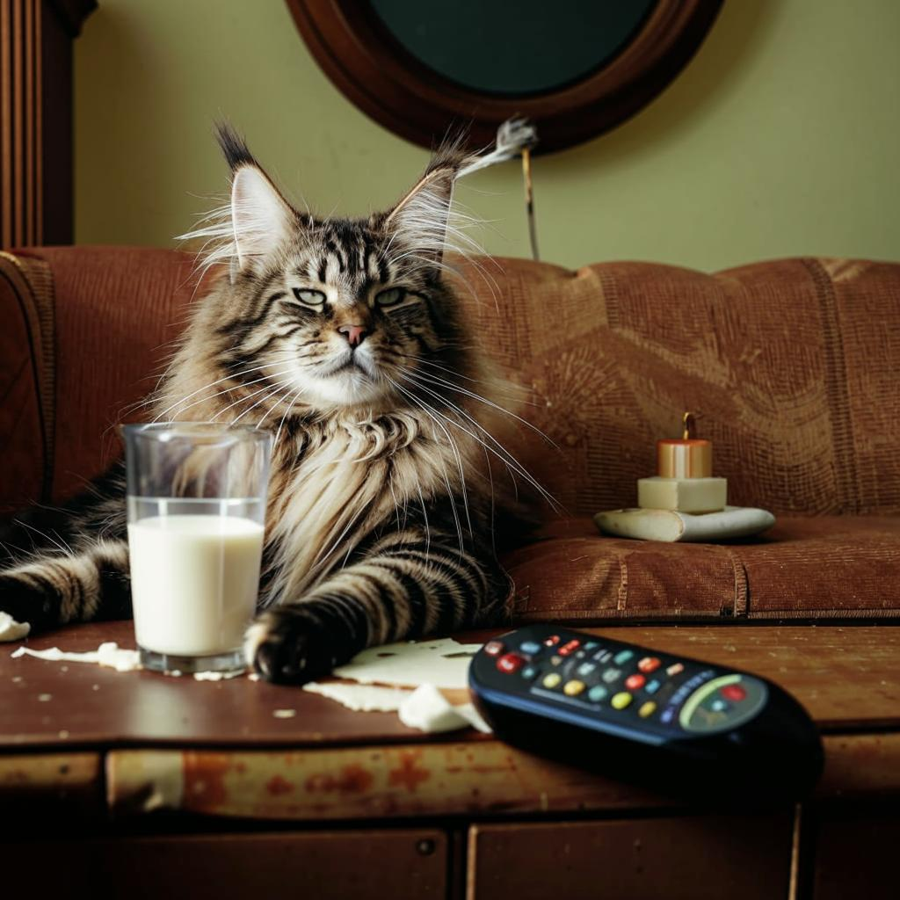
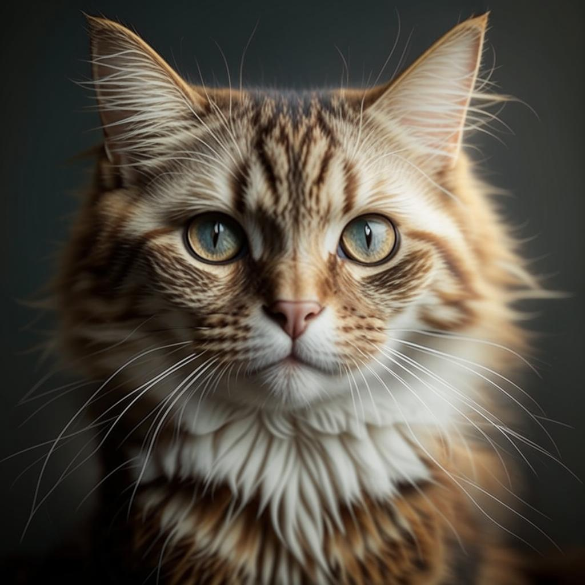
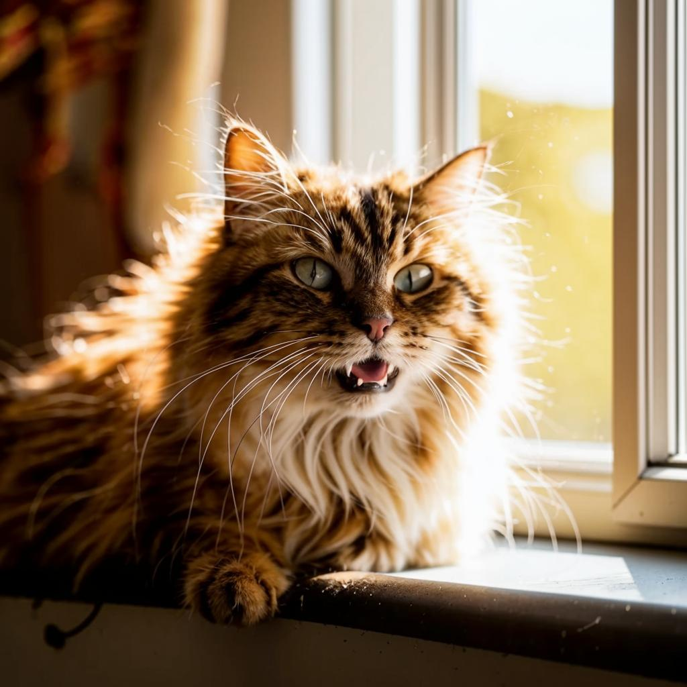
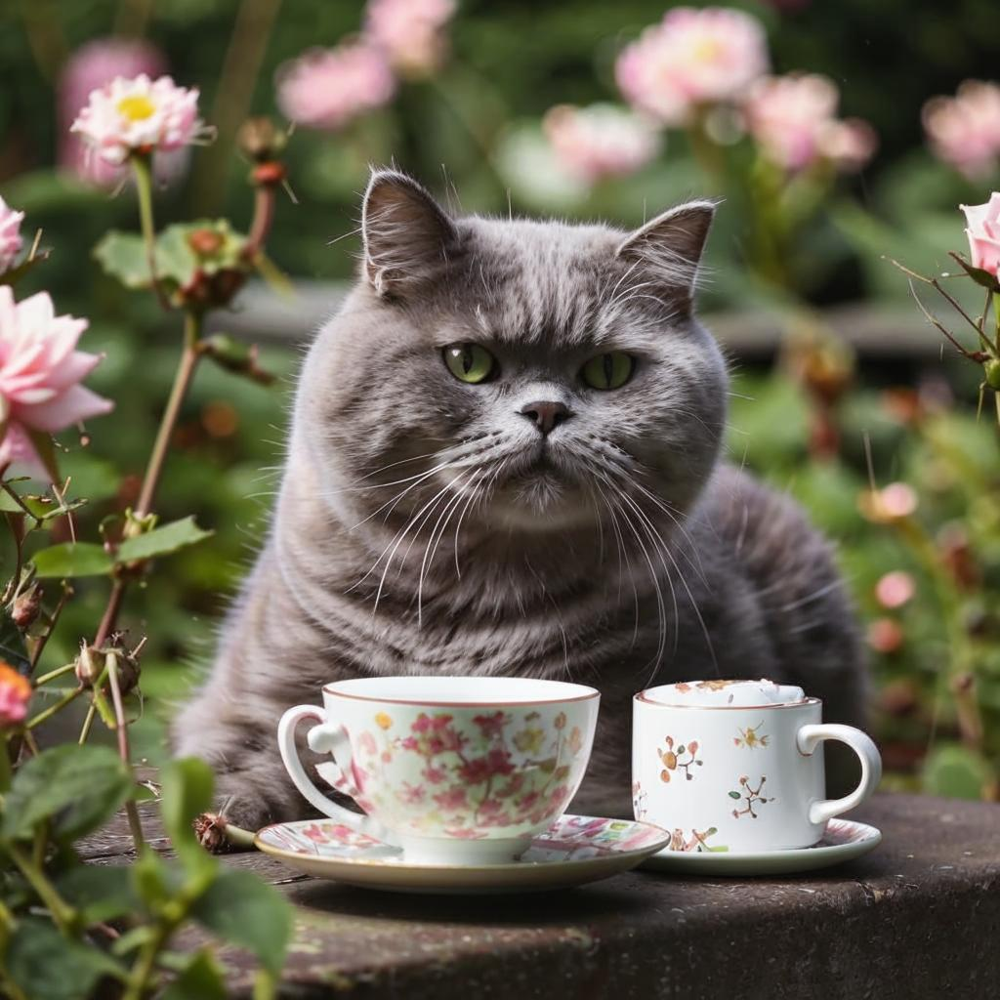
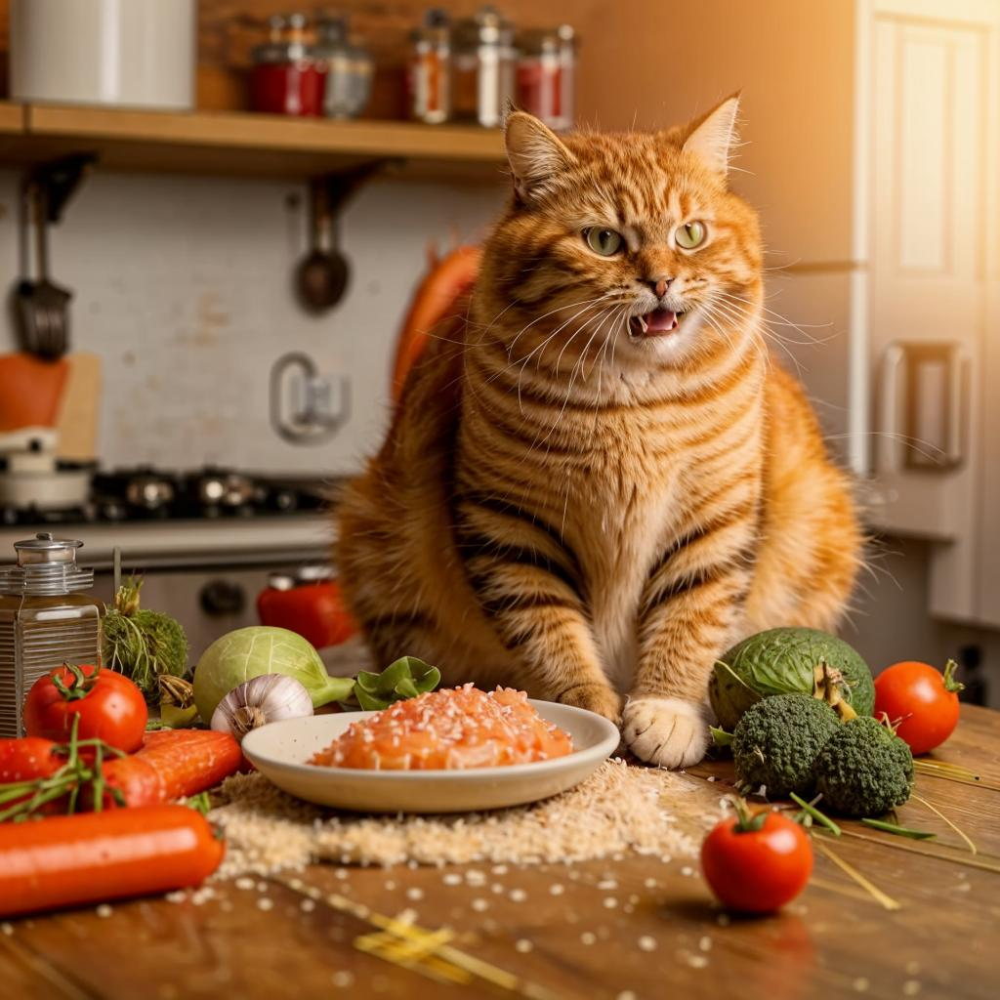

Факт 1
Уникальный рисунок на носу кошки неповторим, что делает его таким же индивидуальным идентификатором, как отпечатки пальцев у человека.

Уникальный рисунок на носу кошки неповторим, что делает его таким же индивидуальным идентификатором, как отпечатки пальцев у человека.

Взрослая кошка тратит на сон около 70% своей жизни, чтобы сохранять энергию для охоты.

Кошки используют мяуканье почти исключительно для того, чтобы манипулировать людьми или общаться с ними.

Слух кошки настолько острый, что она способна слышать ультразвуковые сигналы, которыми общаются грызуны.

Кошки — единственные млекопитающие, которые не способны ощущать сладкий вкус, так как у них отсутствуют соответствующие вкусовые рецепторы.